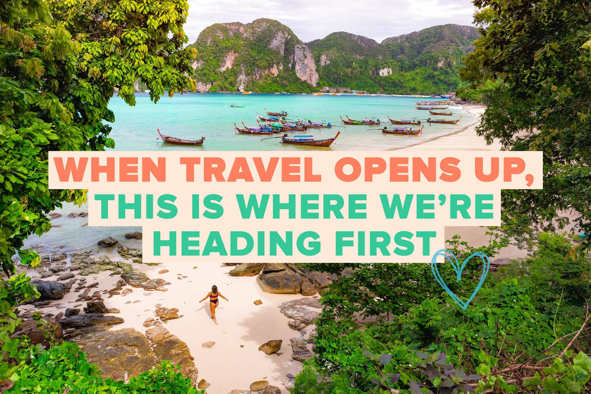
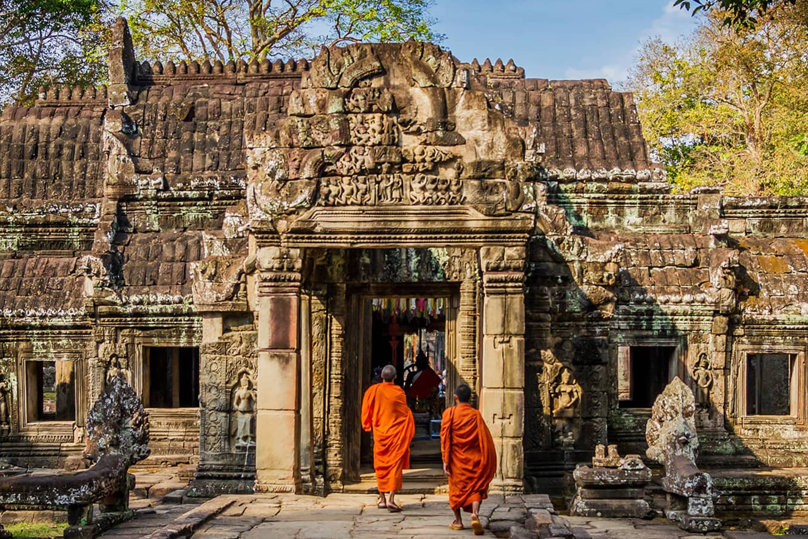

Blogs
You must check out these blogs from other travellers
When Travel Opens Up, This Is Where We're Heading First
Intro Travel | 18th December 2020
With 2020 all but ruled out for international travel, it's an understatement to say we're more than ready to hop on a plane as soon as travel is possible again. The announcement of the vaccine rollout is certainly a reason to celebrate, and while we might have to wait a little longer to officially pop the end-of-pandemic champagne, the time to think about travel is here. These are the destinations we're keen to jet off to as soon as the world opens up!
Read More
Backpacking Cambodia Travel Guide
Nomadic Matt | 29th January 2021
Backpacking Cambodia was one of the best experiences I ever had.
When I first visited Cambodia, I had low expectations for the country. I hadn’t heard much about it. I only knew it’s horrible past and that it wasn’t that developed. I didn’t expect much. But, traveling Cambodia, I was blown away by how friendly the people were, how beautiful the country was, and how much there was to see and do there.
Now, Cambodia one of my all-time favorite travel destinations – and I think it’s one of the most underrated countries in the world. I can’t speak highly enough about it!